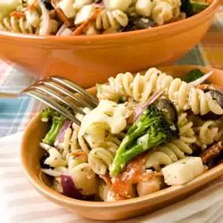

The Ultimate Pasta Salad

Ingredients
- 1 (16 ounce) package uncooked tri-colored spiral pasta
- 1 head fresh broccoli, cut into bite size pieces
- 1 head fresh cauliflower, chopped into bite size pieces
- 1 red onion, chopped
- 2 teaspoons minced garlic
- 8 ounces pepperoni slices, cut into quarters
- 1 (8 ounce) package mozzarella cheese, cut into cubes
- 1 (6 ounce) can large pitted black olives, drained and sliced
- ½ cup olive oil, or to taste
- ½ cup red wine vinegar, or to taste
- salt and pepper to taste
- Italian seasoning to taste
How to Make Pasta Salad
Step 1
Bring a large pot of lightly salted water to a boil. Place pasta in the pot; cook until al dente, 8 to 10 minutes. Drain and transfer to a bowl. Cover and chill in the refrigerator for 1 hour.
Step 2
Toss chilled pasta with broccoli, cauliflower, red onion, garlic, pepperoni, mozzarella cheese, olives, olive oil, and red wine vinegar. Season with salt, pepper, and Italian seasoning. Chill in the refrigerator until serving.